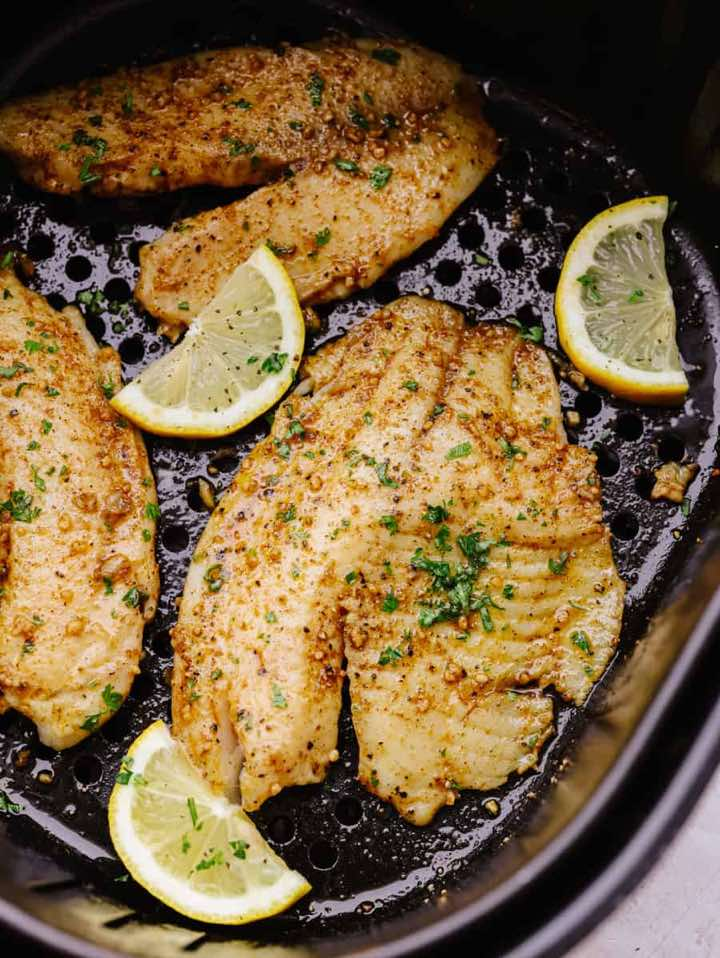

Air Fryer Tilapia
Air FryerFish
Servings4 tilapia
PrepPT5M
CookPT10M

Ingredients
- 1 pound tilapia fillets
- salt and pepper
- 1/4 cup butter, melted
- 1 Tablespoon olive oil
- 3 garlic cloves minced
- 1 Tablespoon Cajun Seasoning
Directions
- Salt and Pepper the tilapia fillets.
- To make the Cajun Garlic Butter Sauce
- In a small bowl whisk together the melted butter, olive oil, garlic and cajun seasoning. Spread evenly over the fish.
- Place the fish in the basket of the air fryer. Cook at 290 degrees for 5 minutes. Flip the fish and cook for 3-4 minutes more or until flaky and opaque.
Source
https://therecipecritic.com/air-fryer-tilapia/
This page includes Schema.org Recipe structured data for recipe importers.